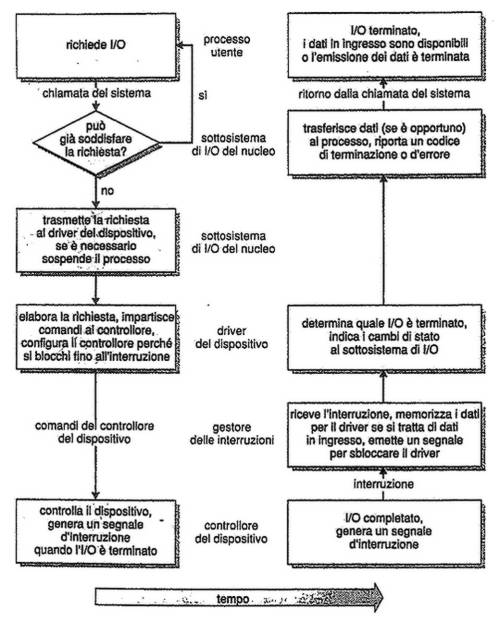

Torna alla pagina di Sistemi Operativi
:: Appunti 2.0 ::
Sottoinsiemi di I/O
Panoramica
Il corretto controllo dei dispositivi di I/O è uno dei compiti principali di un sistema operativo, e data l'estrema eterogeneità delle periferiche sono necessari diversi sistemi di gestione, il cui insieme va a formare il sottosistema di I/O del kernel.
L'hardware di I/O
I computer utilizzano molti tipi diversi di periferiche, la maggior parte delle quali rientra in tre categorie: memorizzazione, trasmissione e interfaccia.
In generale una periferica comunica con un computer inviando segnali via cavo o via etere attraverso un punto di connessione detto porta.
Se uno o più dispositivi condividono lo stesso insieme di cavi e di protocolli per la comunicazione, questa connessione prende il nome di bus. Sono molto comuni nelle architetture hardware.
I controller sono invece dei componenti elettronici che possono operare su una porta, un bus o una periferica ed hanno alcune responsabilità di gestione su esse. A seconda dalla loro complessità possono essere singoli chip o circuiti separati (come per l'hard disk).
In che modo il processore invia comandi e dati al controller per eseguire un trasferimento di I/O? Un primo sistema è fornire ad esso una serie di registri dedicati, quali:
- registro di stato della periferica, che può essere letto dal computer e che notifica ad esempio un'avvenuta esecuzione, la disponibilità di byte per la lettura, errori, ecc
- registro di controllo o di comando, che viene scritto dal computer per lanciare un comando o cambiare le modalità di una periferica
- registro di dati in ingresso e registro dei dati in uscita. A questi dure registri possono essere associati dei chip FIFO integrati per estendere di parecchi byte la capacità del controller
Un altro sistema è il mappaggio dell'I/O in memoria, con la CPU che esegue le richieste di I/O utilizzando le istruzioni standard di trasferimento dati in memoria centrale. Offre maggiore facilità di lettura e viene utilizzata comunemente con le schede video.
Attesa attiva
Il protocollo per l'interazione tra computer e controller si basa sulla nozione di handshaking. Sostanzialmente ciò che accade è questo:
- il controller indica il suo stato per mezzo del bit busy, che il computer continua a leggere finché non lo trova sul valore 0 (disponibile)
- il processore specifica il comando nel registro di controllo e setta il bit command-ready su 1, così che la periferica se ne accorga e lo esegua
- terminata l'esecuzione vengono azzerati entrambi i bit.
La lettura del bit busy da parte della CPU prende il nome di attesa attiva perché è un'attesa che presuppone comunque un controllo. Se diventa estremamente lunga e dispendiosa le si preferisce il meccanismo degli interrupt, in cui è la periferica stessa che notifica la propria disponibilità al computer.
Interrupt
Il meccanismo base degli interrupt è il seguente: la CPU ha una connessione chiamata linea di richiesta di interrupt che viene verificata dopo l'esecuzione di ogni istruzione. Quando il processore si accorge che un controller le ha mandato un segnale, salva il valore corrente del program counter e passa immediatamente alla procedura di gestione dell'interrupt memorizzata in un preciso indirizzo di memoria; una volta eseguita, la CPU viene ritornata allo stato precedente.
Esistono alcuni raffinamenti a questo meccanismo, che nelle moderne architetture vengono coadiuvati dai controller degli interrupt. Vediamone alcune:
- possibilità di differire la gestione delle interruzioni durante le elaborazioni critiche distinguendo tra interrupt mascherabili e non, i secondi dei quali gestiscono procedure che non si possono interrompere
- interrupt rinviati nel caso di esecuzione di un processo critico
- utilizzo di un sistema efficiente per recapitare un segnale d'interruzione al corretto gestore. A tal fine si mantiene un vettore degli interrupt che contiene gli indirizzi di memoria dei gestori appropriati. Inoltre con la tecnica dell'interrupt chaining ("prova una procedura finché non trovi quella giusta") si possono migliorare ulteriormente i tempi di risposta
- introdurre il concetto di livello di priorità tra interrupt
Gli interrupt sono usati anche per realizzare trap (interruzioni software) alle procedure del kernel in modalità supervisore, quindi per l'implementazione delle chiamate di sistema.
Accesso diretto alla memoria
I trasferimenti che coinvolgono grosse entità di dati non sono efficienti se effettuati un singolo bit alla volta come abbiamo visto finora, ma è meglio affidarli a processori specifici detti controller di accesso diretto alla memoria (DMA). Un blocco di comandi DMA contiene un puntatore alla sorgente del trasferimento, uno alla destinazione e un contatore col numero dei byte da trasferire. Il controller DMA opera dunque direttamente sul bus di memoria senza alcun intervento della CPU, salvo poi lanciarle un interrupt a trasferimento compiuto.
Alcune architetture usano indirizzi fisici per il DMA, altre invece accessi diretti in memoria virtuale (DVMA) che permettono ad esempio di trasferire dati tra due periferiche senza l'intervento del processore.
Le interfacce di I/O per le applicazioni
Per far sì che un sistema operativo tratti le periferiche allo stesso modo la risposta è l'astrazione, l'incapsulamento e la stratificazione del software; si cerca cioè di isolare le differenze tra i dispositivi I/O individuandone pochi tipi generali. A ciascuno di questi tipi si accede tramite un insieme standard di funzioni che ne costituiscono l' interfaccia, mentre le differenze sono incapsulate in moduli del kernel detti driver del dispositivo. Internalmente i driver sono specifici per una particolare periferica, mentre all'esterno comunicano con perfetta integrazione all'interfaccia standard.
Lo strato di device driver nasconde perciò le differenze tra i controller delle periferiche al sottosistema di I/O del kernel, rendendo più semplice il lavoro sia ai programmatori di sistemi operativi che ai costruttori hardware. Se però questi ultimi da un lato sanno già che tipo di interfacce offrono i sistemi, dall'altro hanno il dramma che ogni sistema operativo ha le proprie.
La migliore strutturazione del software di gestione dell'I/O è la seguente:
- gestione del canale di comunicazione, che deve rendere trasparente il modo in cui viene gestito il flusso di informazione tra calcolatore e periferiche
- device dependent driver, che rende omogenea la visione dei diversi modelli delle periferiche di uno stesso tipo (ad esempio, tutti i mouse)
- device independent driver, che dà invece una visione omogenea di tutti i tipi di dispositivi
Le periferiche possono differire per diversi aspetti:
- trasferimento sincrono o asincrono
- periferica condivisibile o dedicata
- velocità di elaborazione (latenza, tempo di ricerca, velocità di trasferimento, attesa tra le operazioni)
- direzione di I/O (lettura, scrittura, lettura-scrittura)
- metodo d'accesso, se sequenziale o diretto
- modo di trasferimento dei dati, se a caratteri o a blocchi
Molte di queste differenze saranno comunque nascoste dal sistema operativo.
Ultima cosa da ricordare sono le funzioni di controllo diretto delle periferiche, dette escape o back door, che permettono il passaggio trasparente di comandi direttamente dalle applicazioni ai driver dei dispositivi.
Dispositivi con trasferimento dei dati a caratteri e a blocchi
L'interfaccia dei dispositivi con trasferimento dei dati a blocchi si occupa di tutti gli aspetti necessari per accedere ai drive di disco e ad altre periferiche a blocchi. Le periferiche dovrebbero prevedere comandi come read() write() o seek() per l'accesso diretto.
Gli accessi stessi da parte del sistema operativo e delle applicazioni possono sfruttare le interfacce del file system o considerare le periferiche a blocchi come semplici array lineari di blocchi. In questo secondo caso si parla di I/O grezzo.
Se invece l'accesso avviene per mappaggio in memoria, l'interfaccia deve fornire l'accesso alla memoria secondaria tramite un array di byte posto in memoria centrale; è quello che succede anche per l'accesso del kernel nell'area di swap.
Le periferiche con trasferimento dati a caratteri sono ad esempio tastiere mouse e modem, che producono dati in ingresso sottoforma di flussi sequenziali di byte in modo non predicibile dalle applicazioni. Sono tipici anche di schede audio e stampanti.
Le periferiche di rete
Le prestazioni e le caratteristiche di indirizzamento di una rete informatica sono molto diverse da quelle delle operazioni di I/O su disco, dunque la maggior parte dei sistemi operativi fornisce interfacce I/O di rete differenti da quelle viste finora. Tra quelle più diffuse in sistemi come UNIX e Windows c'è quella del socket di rete.
Orologi e temporizzatori
Nella maggior parte dei sistemi vengono utilizzati orologi (clock) e temporizzatori (timer) per tener traccia dell'ora corrente, del tempo trascorso, o ancora - è il caso del timer programmabile - per impostare un certo intervallo prima di scatenare un interrupt. Quest'ultima funzione può essere utilizzata con profitto per implementare ad esempio il round-robin tra processi, o per svuotare periodicamente la cache del buffer, o per interrompere le operazioni di rete che ci stanno mettendo troppo tempo.
I/O bloccante e non bloccante
Le operazioni di I/O bloccanti sospendono l'esecuzione dell'applicazione, che viene spostata nella coda di quelle in attesa finché la chiamata di sistema non è stata completamente eseguita; solo a qual punto l'applicazione potrà tornare nella coda dei processi pronti.
Gli I/O non bloccanti non prevedono tale sospensione e sono tipici delle interfacce utente d'ingresso (tastiera, mouse).
Il sottosistema di I/O del kernel
Molti servizi di I/O sono messi a disposizione dal sottostistema di I/O del kernel e montati direttamente sull'hardware e sull'infrastruttura dei driver delle periferiche.
Schedulazione dell'I/O
Schedulare una serie di richieste di I/O significa trovare un buon ordine di esecuzione delle richieste stesse, il che migliora certamente le prestazioni globali del sistema dato che l'ordine dettato dalle applicazioni è raramente lungimirante. La schedulazione viene implementata mantenendo una coda di richieste per ogni periferica e facendovi operare uno schedulatore dedicato.
Buffering
Il buffer è una zona di memoria in cui vengono memorizzati temporaneamente i dati mentre vengono trasferiti tra due periferiche o tra periferiche e applicazioni. Si usano principalmente per tre motivi:
- appianano la differenza di velocità tra mittente e destinatario di un flusso di dati
- fungono da adattatori tra periferiche con blocchi di dimensioni diverse
- supportano la semantica della copia, che garantisce che la versione dei dati scritta su un dispositivo sia la stessa versione presente in memoria al momento della chiamata di sistema dell'applicazione.
Caching
La cache è una zona di memoria veloce che conserva copie dei dati così che l'accesso ad essi sia più veloce che su disco. La differenza col buffer è che in questi ultimi è presente la sola copia esistente di un certo dato; ciò nonostante alcune regioni di memoria possono essere utilizzate per entrambi gli scopi.
Spooling e prenotazione dei dispositivi
Lo spool è un buffer su memoria di massa che conserva l'output per una periferica che non può accettare flussi di dati da più processi contemporaneamente, come ad esempio le stampanti. Lo spooler è l'unico programma che ha accesso diretto alla periferica, e gestisce il buffer offrendo agli utenti alcune operazioni aggiuntive come la visualizzazione della coda di attesa dei processi o la cancellazione/sospensione di uno di essi.
Un'altra tecnica che consente di coordinare quelle periferiche che non possono gestire in modo efficace le richieste di I/O da parte di applicazioni concorrenti è la prenotazione (locking) delle stesse, così da ottenere l'accesso esclusivo ad esse per poi renderle di nuovo disponibili una volta terminata l'operazione.
Gestione degli errori
Esistono molti tipi di errori hardware ed i sistemi operativi possono (e devono) far fronte alla maggior parte di essi in modo efficace attraverso opportune procedure di segnalazione dell'errore. Queste fanno uso di bit di informazione o di variabili integrali addizionali, che se ben realizzate potranno dare un grado di dettaglio dell'errore sorprendentemente alto.
Strutture dati del kernel
Il mantenimento continuo di informazioni di stato per l'uso di componenti di I/O da parte del kernel è realizzato attraverso un certo numero di strutture dati interne ad esso, come ad esempio la tabella dei file aperti.
Trasformazione dell'I/O in operazioni hardware

Le prestazioni
La gestione degli I/O è il fattore di maggiore importanza per le prestazioni di un sistema in quanto sottopone la CPU a pesanti requisiti: eseguire il codice dei driver delle periferiche, schedulare i processi, effettuare i cambi di contesto dovuti agli interrupt, copiare i dati tra memorie cache e buffer.
Ci sono diverse strade per migliorare le prestazioni del sistema aumentando l'efficienza dell'I/O:
- ridurre il numero dei cambi di contesto
- ridurre il numero di copie nel passaggio tra dispositivi e applicazioni
- ridurre la frequenza degli interrupt usando grandi trasferimenti e controller capaci
- aumentare la concorrenza con DMA
- spostare le primitive di gestione delle periferiche nell'hardware, a livello più basso
- equilibrare le prestazioni del sistema, dato che un sovraccarico di un componente comporta il rallentamento di tutta la baracca.
Torna alla pagina di Sistemi Operativi